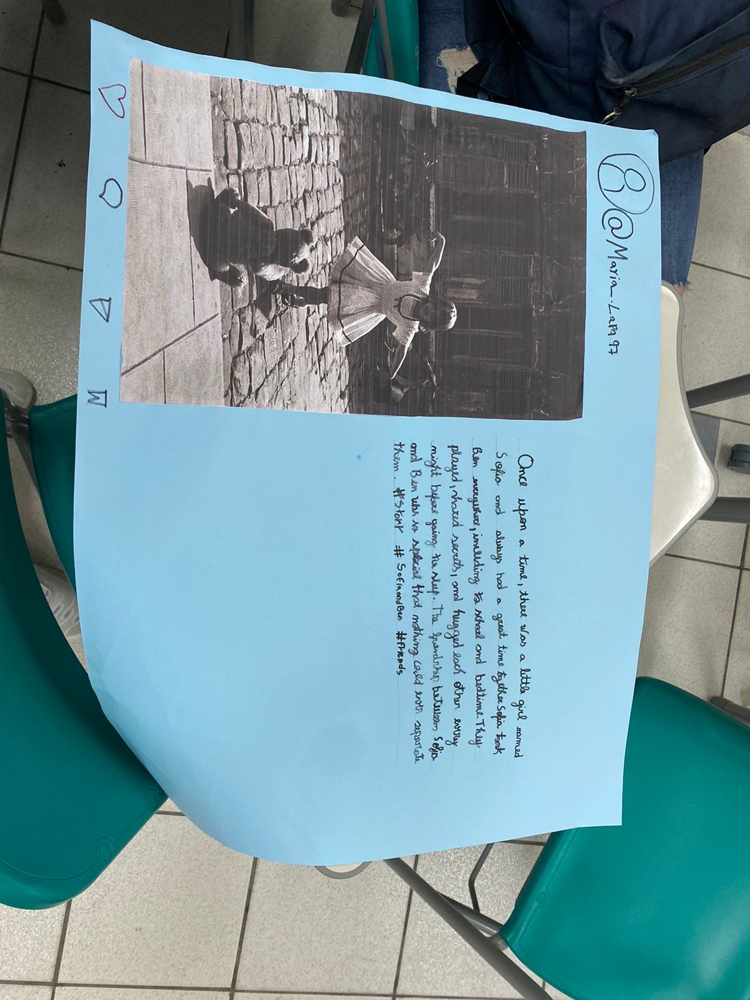

Linguagens
1° trimestre
A Importância da Educação Socioemocional nas Escolas
de Beatriz Cristini Martins
Apresentação de Negócios Pitch Deck de Visão Jovem Profissional Criativo Azul Verde Bege
de fernando

Simple past